我曾在银色平原漫步，也曾在青草之河垂钓，这片土地认识我。
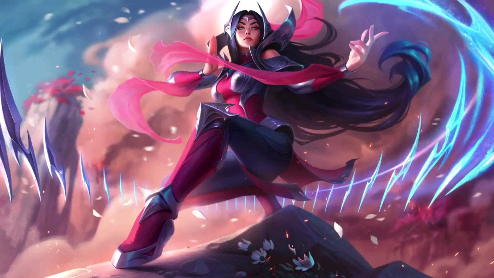
我们已经失去了所有我们关心的人，所以我们要保证，不会再有人被带走，如果我出了什么意外，这项事业就由你做主了。
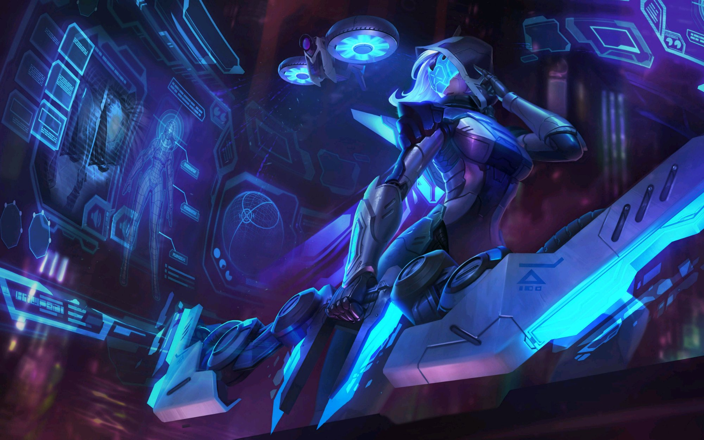
只有你爱的人，才伤得了你的心。
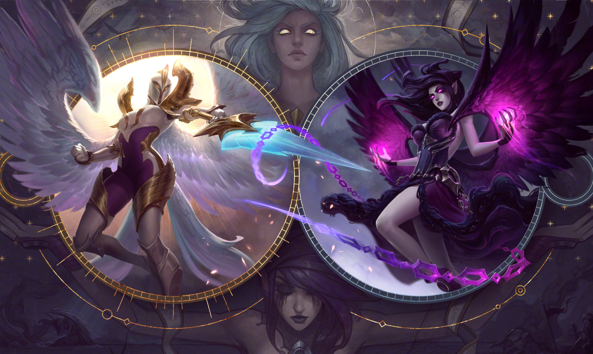
为逝者默哀，为生者奋战，这就是我回来的原因。
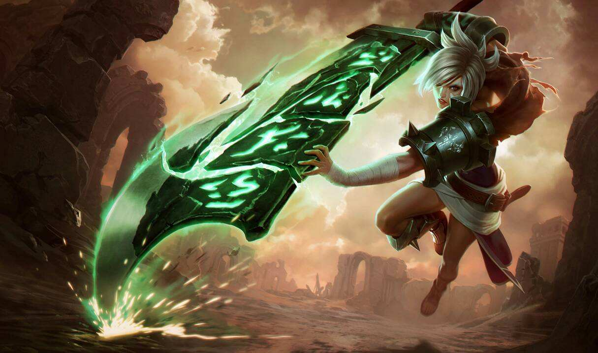
有时候时间会静止下来，而你能做的，只有观望。
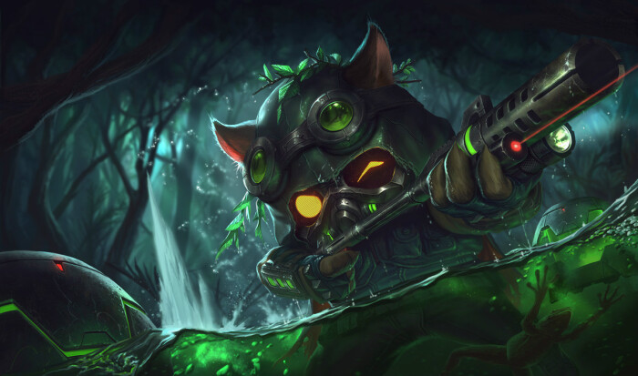
有一次我以为我找到那位英雄了，但她死了。
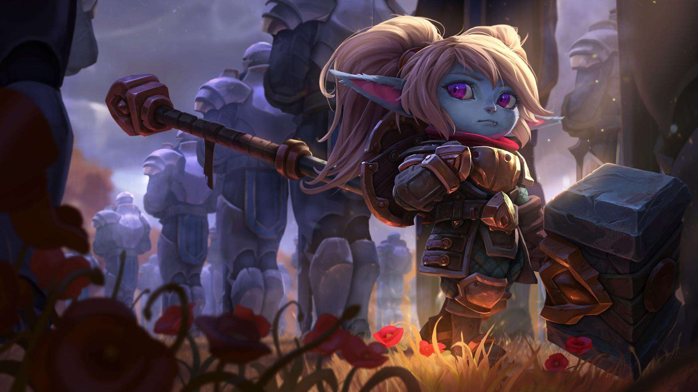
生命衰退是也无需恐慌，所有火花都会激发新火焰。
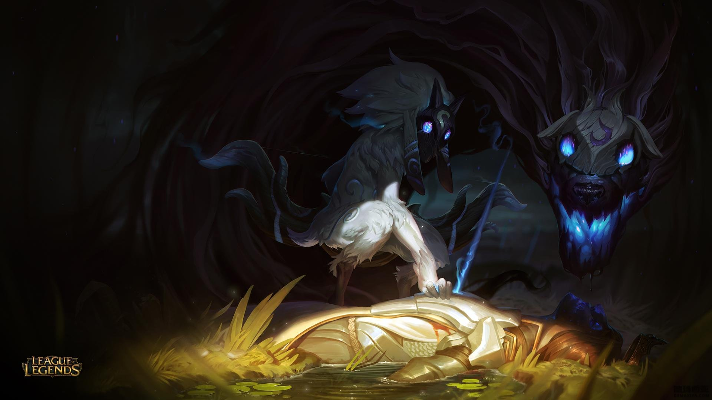
要么打要么跑，只是现在，我不会退缩，我绝不退缩！
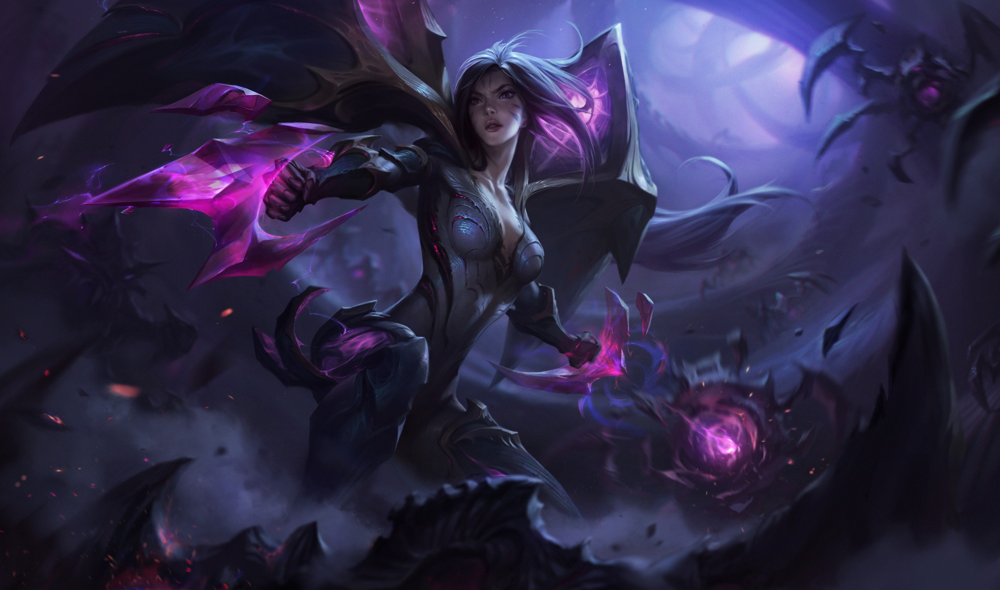
我是麦田下英魂长眠的兄弟，我是千百次溃败的战争之子，我知道我是谁，我要让神看到我将是谁！
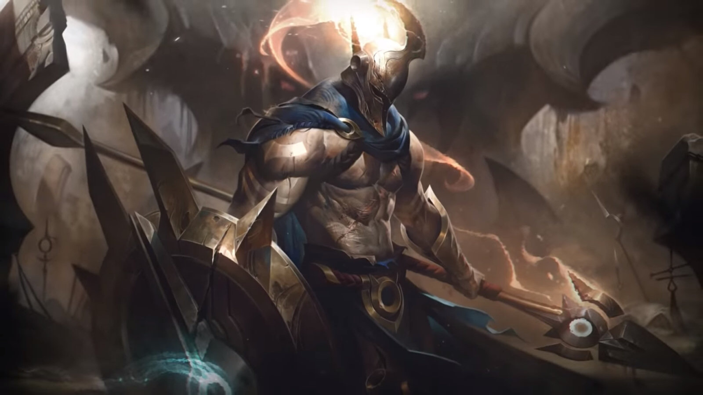
恕瑞玛，你的皇帝回来了！
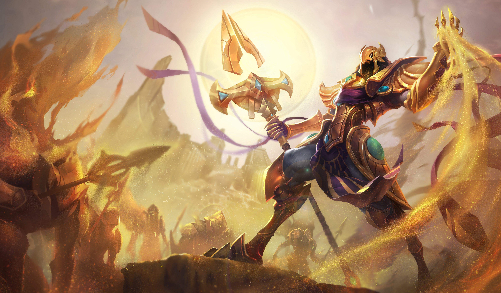
如果你没有战斗的本领起码也要有赴死的意识。
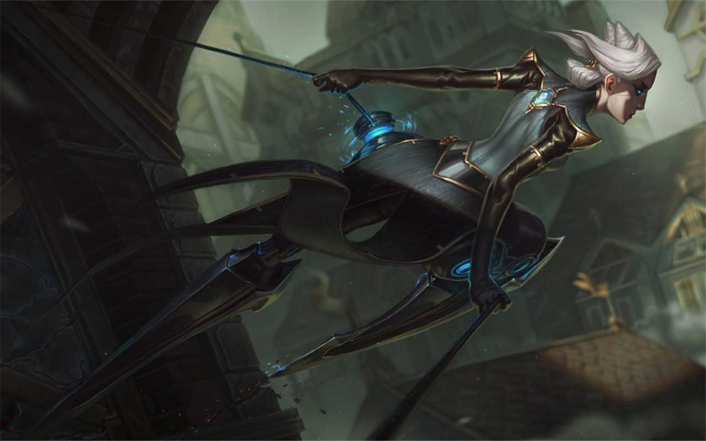
荣耀剑下取，均衡乱中求。
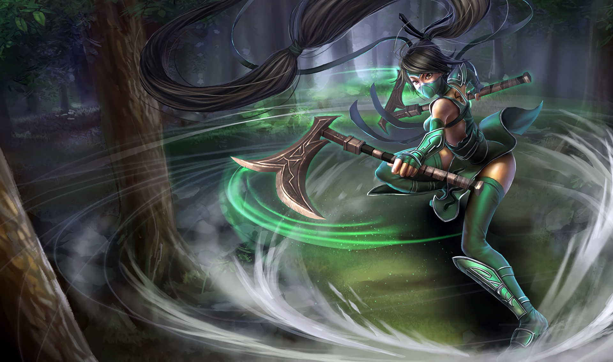
每个人都有弱点，他们的弱点,就是我的目标。
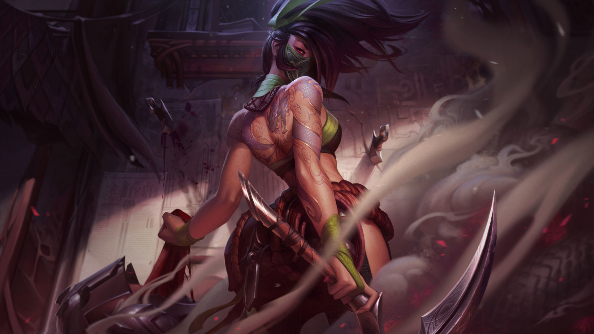
要是我死了，你会怎么办。
我会把，世界烧成平地，再从灰烬里建起一座城堡，在里面独自生活，直到永远.
噢，真美好。